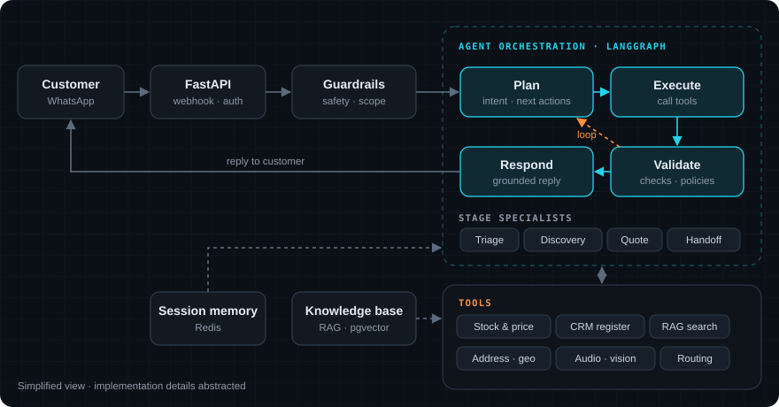
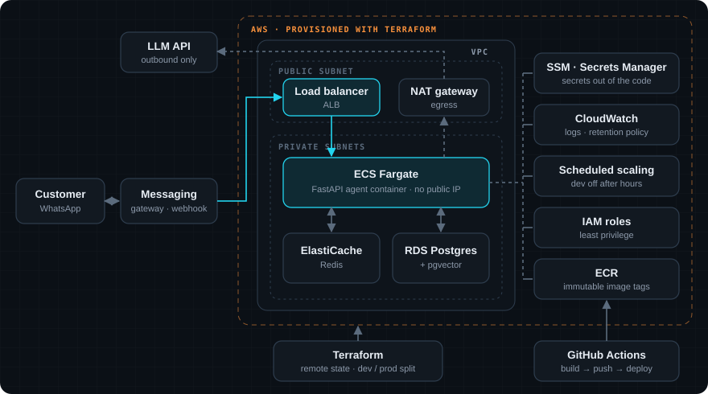

PitStop AI Sales
Um agente de vendas com IA que atende clientes de uma rede de autopeças e oficinas pelo WhatsApp. Ele entende o que o cliente precisa, consulta estoque e preço, cadastra o cliente e entrega a conversa para o vendedor certo quando é hora de fechar. An AI sales agent that serves customers of an auto-parts and repair network over WhatsApp. It figures out what the customer needs, checks stock and price, registers the customer and hands the conversation to the right salesperson when it's time to close.
O problemaThe problem
O balcão de autopeças recebe pelo WhatsApp perguntas como "tem pastilha de freio pro meu carro?" o dia inteiro, inclusive fora do horário. Os vendedores perdiam tempo com triagem e cadastro, e o cliente esperava. The parts counter gets WhatsApp questions like "do you have brake pads for my car?" all day, including after hours. Salespeople lost time on triage and data entry, and customers waited.
O objetivo era um agente que resolvesse a parte repetitiva (identificar o cliente, entender o pedido, consultar estoque e preço, coletar dados) e passasse para um humano só quando valesse a pena, com o contexto já organizado. The goal was an agent that handles the repetitive part (identify the customer, understand the request, check stock and price, collect data) and passes to a human only when it's worth it, with the context already organized.
Arquitetura de agentesAgent architecture
Em vez de um único prompt gigante, o atendimento é um loop agentivo orquestrado com LangGraph: o agente planeja a próxima ação, executa ferramentas, valida o resultado e só então responde. Se a validação reprova, o loop volta para o planejamento. Instead of one giant prompt, the conversation runs as an agentic loop orchestrated with LangGraph: the agent plans the next action, runs tools, validates the result and only then replies. If validation fails, the loop goes back to planning.

01Loop agentivoAgentic loop
Planejar → executar → validar → responder. A decisão do que fazer vem de uma saída estruturada, e a execução das ações é código determinístico, o que deixa o comportamento previsível e testável.Plan → execute → validate → respond. What to do comes from structured output, and actions run as deterministic code, which keeps behavior predictable and testable.
02Especialistas por etapaStage specialists
Cada fase da conversa (triagem, descoberta de produto, cotação, handoff) tem instruções e regras próprias. Uma máquina de estados controla em que etapa o cliente está.Each conversation phase (triage, product discovery, quote, handoff) has its own instructions and rules. A state machine tracks which stage the customer is in.
03Camadas de validaçãoValidation layers
Antes de responder, a mensagem passa por checagens de segurança, de escopo e de consistência. Isso barra prompt injection, assuntos fora do tema e respostas que contradizem os dados.Before replying, the message goes through safety, scope and consistency checks. That blocks prompt injection, off-topic requests and replies that contradict the data.
04Memória e handoffMemory & handoff
Memória de sessão em Redis por cliente e histórico completo no banco. Quando um vendedor assume, o agente para de responder e entrega um resumo da conversa.Per-customer session memory in Redis and full history in the database. When a salesperson takes over, the agent stops replying and hands over a conversation summary.
Ferramentas do agenteAgent tools
API em FastAPIFastAPI service
Todo o sistema é exposto como uma API REST em FastAPI, multi-tenant, com autenticação JWT e papéis de acesso. Além do webhook que recebe as mensagens, a API gerencia o que o agente sabe e como ele se comporta. The whole system is a multi-tenant REST API in FastAPI, with JWT auth and access roles. Besides the webhook that receives messages, the API manages what the agent knows and how it behaves.
↳Webhook
Recebe eventos do WhatsApp com verificação de assinatura, idempotência e lock por conversa.Receives WhatsApp events with signature checks, idempotency and per-conversation locks.
RAGColeçõesCollections
Endpoints para criar coleções, ingerir texto e PDF e fazer busca semântica.Endpoints to create collections, ingest text and PDFs, and run semantic search.
⚙ConfiguraçãoConfiguration
Catálogo, produtos, lojas, vendedores e prompts por cliente, editáveis sem deploy.Catalog, products, stores, salespeople and per-tenant prompts, editable without a deploy.
Pipeline de RAGRAG pipeline
O agente responde com base em documentos da empresa (catálogos, políticas, fichas técnicas), não só no que o modelo "acha". O pipeline roda dentro da própria API: The agent answers from company documents (catalogs, policies, spec sheets), not just from what the model "thinks". The pipeline runs inside the API itself:
- IngestãoIngestionTexto ou PDF via endpoint. PDFs escaneados passam por OCR antes.Text or PDF through an endpoint. Scanned PDFs go through OCR first.
- ChunkingJanelas com sobreposição configuráveis por coleção, e deduplicação por hash para não indexar o mesmo conteúdo duas vezes.Overlapping windows configurable per collection, plus hash dedup so the same content is never indexed twice.
- EmbeddingsModelo de embeddings open-source rodando localmente: sem custo por chamada e sem enviar documentos para fora.An open-source embedding model running locally: no per-call cost and documents never leave.
- ArmazenamentoStorageVetores no próprio Postgres com pgvector, separados por cliente (multi-tenant).Vectors in Postgres itself with pgvector, isolated per tenant.
- BuscaRetrievalSimilaridade de cosseno com top-k, exposta como ferramenta para o agente.Cosine similarity with top-k, exposed to the agent as a tool.
Infraestrutura na nuvemCloud infrastructure
Tudo roda na AWS e é descrito em Terraform, com ambientes de desenvolvimento e produção separados. A ideia: o mínimo de servidor para cuidar, o mínimo exposto à internet e custo baixo. Everything runs on AWS and is described in Terraform, with separate dev and prod environments. The idea: as few servers to babysit as possible, as little exposed to the internet as possible, and low cost.

| PeçaPiece | O que fazWhat it does | Por que essa escolhaWhy this choice |
|---|---|---|
| ECS Fargate | Roda a API em container DockerRuns the API as a Docker container | Sem servidor para manter ou atualizar; escala por número de tarefas.No server to patch or maintain; scales by task count. |
| Load balancer (ALB) | Recebe o webhook e faz health checkReceives the webhook and runs health checks | Só o balanceador fica público; a aplicação fica em subnet privada, sem IP público.Only the balancer is public; the app sits in a private subnet with no public IP. |
| RDS Postgres + pgvector | Dados de negócio e vetores do RAGBusiness data and RAG vectors | Um banco só para dados e vetores: menos peças, menos custo, backups juntos.One database for data and vectors: fewer parts, lower cost, shared backups. |
| ElastiCache Redis | Sessão, filas, locks e rate limitSessions, queues, locks and rate limiting | Estado rápido e compartilhado entre réplicas, evitando respostas duplicadas.Fast state shared across replicas, preventing duplicate replies. |
| SSM · Secrets Manager | Guarda chaves e credenciaisStores keys and credentials | Nenhum segredo no código ou na imagem; injetados no container em tempo de execução.No secrets in code or images; injected into the container at runtime. |
| ECR | Registro das imagens DockerDocker image registry | Tags imutáveis tornam o rollback confiável: cada versão aponta sempre para a mesma imagem.Immutable tags make rollback reliable: each version always points to the same image. |
| CloudWatch | Logs centralizadosCentralized logs | Retenção curta no dev e maior em produção, para equilibrar custo e investigação.Short retention in dev and longer in prod, balancing cost and debugging. |
| Escala agendadaScheduled scaling | Desliga o dev fora do horário comercialTurns dev off outside business hours | Ambiente de testes não precisa rodar de madrugada: corte direto de custo.A test environment doesn't need to run overnight: a direct cost cut. |
| Terraform | Descreve toda a infra como códigoDescribes all infra as code | Infra versionada, revisável e reproduzível; estados separados para dev e produção.Versioned, reviewable, reproducible infra; separate state for dev and prod. |
| GitHub Actions | Build, push e deployBuild, push and deploy | Cada merge gera uma imagem nova e atualiza o serviço sem passo manual.Every merge builds a new image and updates the service with no manual step. |
Qualidade e observabilidadeQuality & observability
✓250+ testes250+ tests
pytest cobrindo fluxo de conversa, RAG, roteamento, handoff, segurança e autenticação.pytest covering conversation flow, RAG, routing, handoff, security and auth.
◎Tracing
Cada passo do agente e cada ferramenta é rastreado no LangSmith, o que facilita entender por que ele respondeu o que respondeu.Every agent step and tool call is traced in LangSmith, so it's easy to see why it said what it said.
★AvaliaçãoEvaluation
Scripts de avaliação de qualidade do agente rodando sobre conversas de referência.Agent quality evaluation scripts that run on reference conversations.